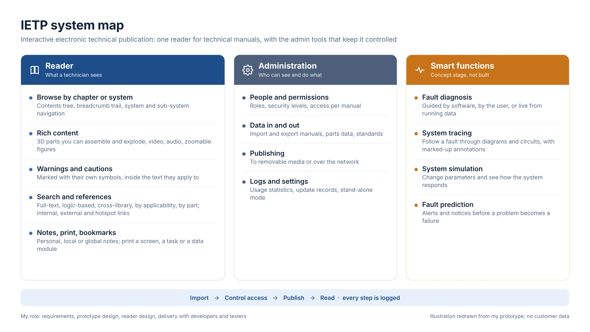
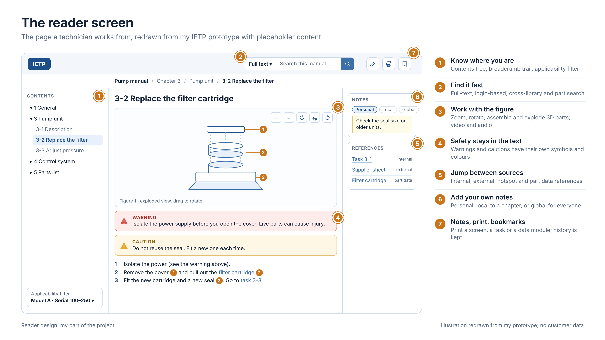
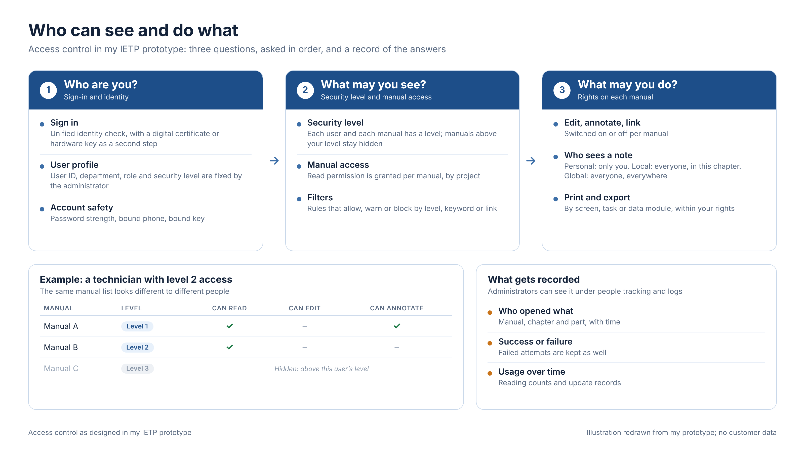

Case study · Product · Work project
An interactive technical manual reader
I designed the reading side of an interactive technical publication system (IETP): what technicians see, who is allowed to see it, and how the admin tools around it work.
01What it is
Technical manuals for complex equipment are long, full of drawings and cross-references, and must be used by people with different roles and security levels. An IETP replaces the paper volume with a screen where content can be searched, linked, filtered by equipment model and controlled by permission.
The prototype covers three parts. The reader is what a technician uses. The admin tools manage people, manual access, import, export and publishing. A set of fault-finding ideas (diagnosis, tracing, simulation, prediction) was proposed as a concept and not built.
Figure 1 · The system at a glance

02The reader screen
The reader is the part I was responsible for. The screen has to answer one question at all times: where am I, and what is safe to do next? Contents and breadcrumbs answer the first. Warnings and cautions that sit inside the text answer the second, so they cannot be skipped.
Figure 2 · The reader screen

03Access control
Manuals carry different security levels, so the system asks three things in order: who you are, what you may see, and what you may do. Notes follow the same logic: a personal note is private, a local note is shared in its chapter, and a global note is shared everywhere. Every access is recorded for the administrator.
Figure 3 · Who can see and do what

04My part
I worked with the client to turn their way of working into requirements, then drew the prototype of more than 40 screens. I worked with UI designers and developers through the build, supported testing, and took part in delivery. The reader was my sole responsibility. I also took part in the client application, together with colleagues.
Skills shown